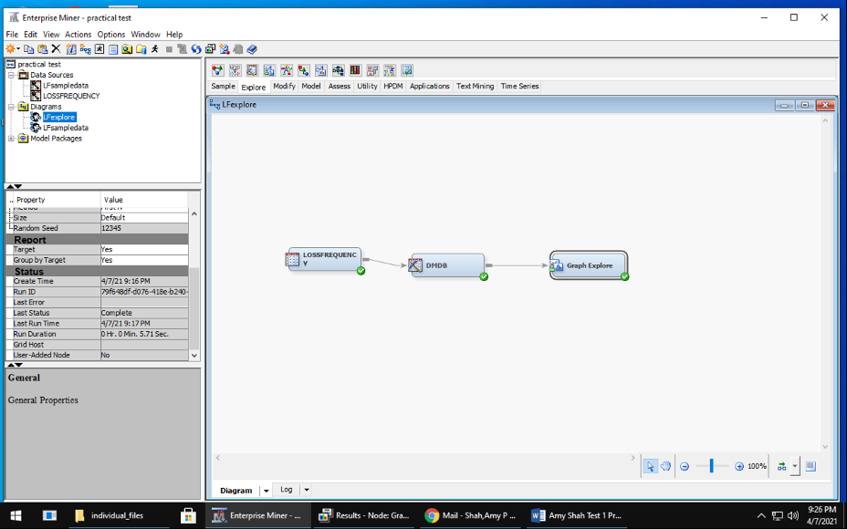
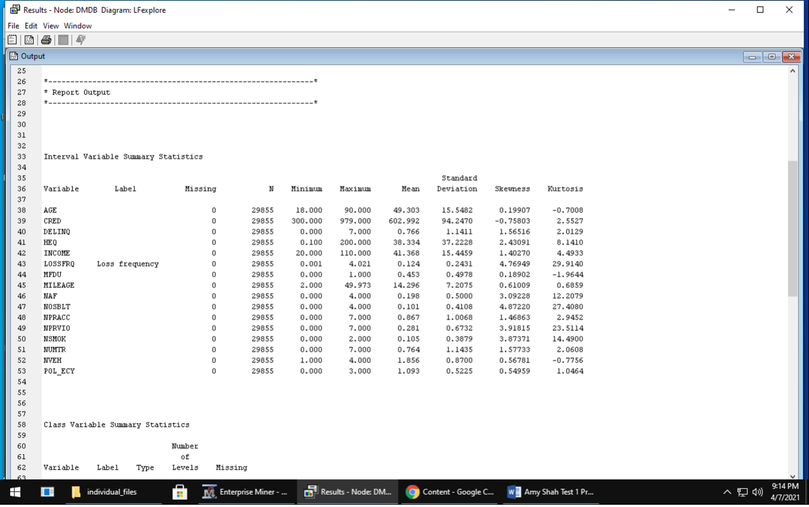
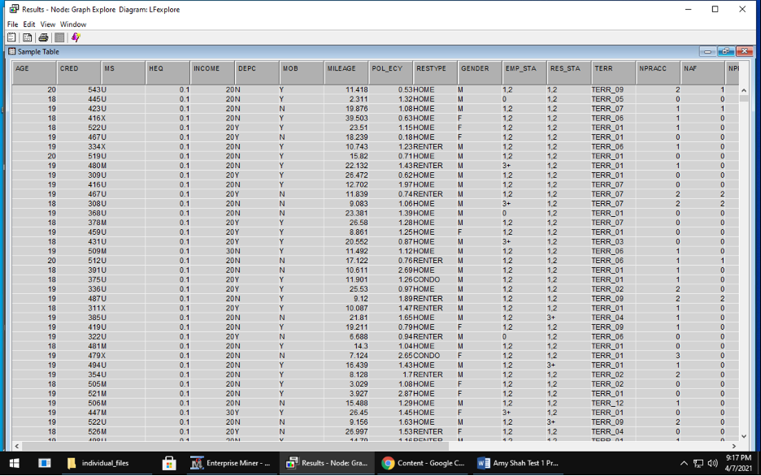
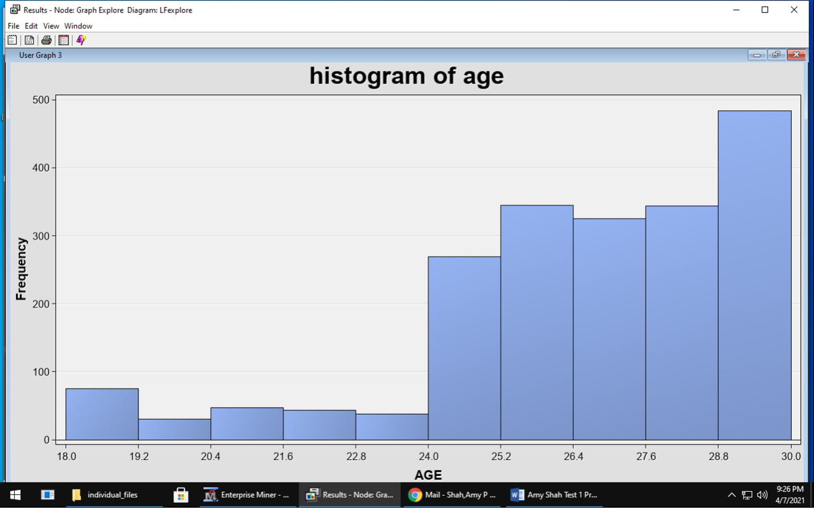
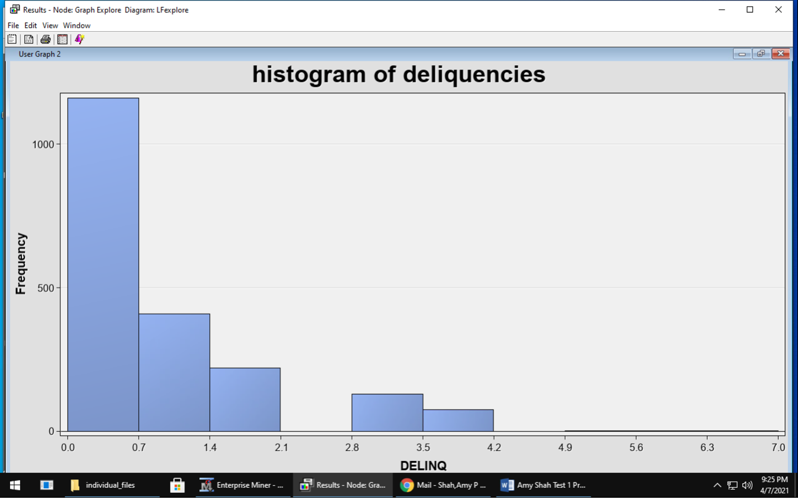
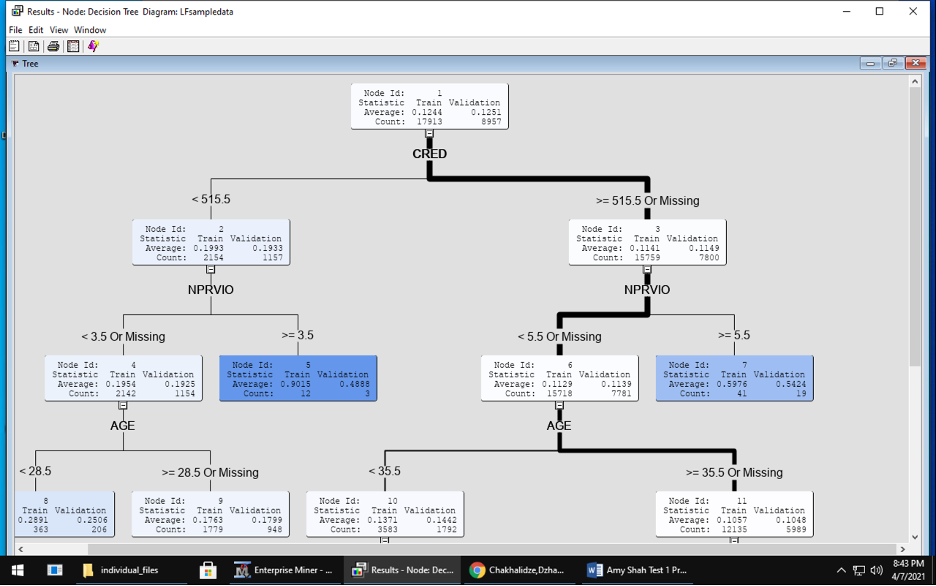
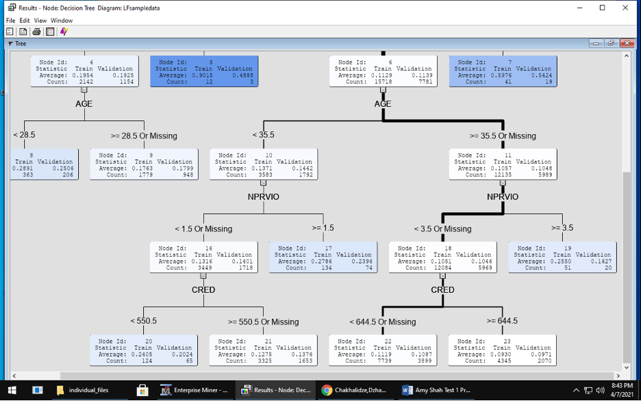
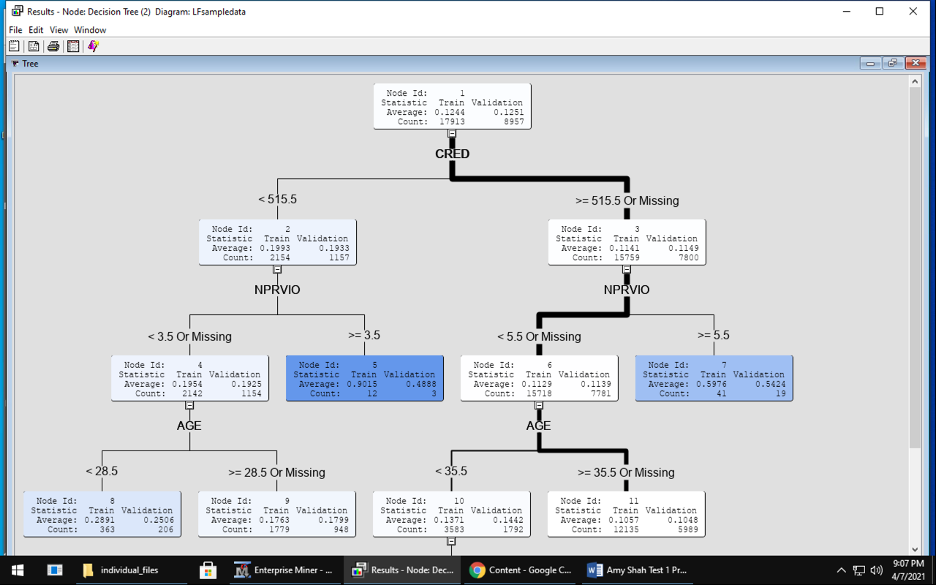
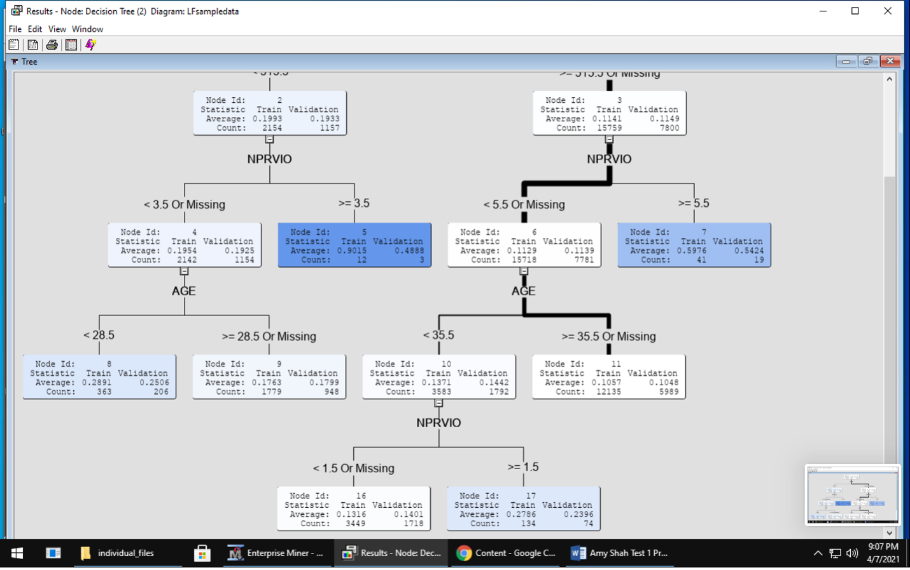
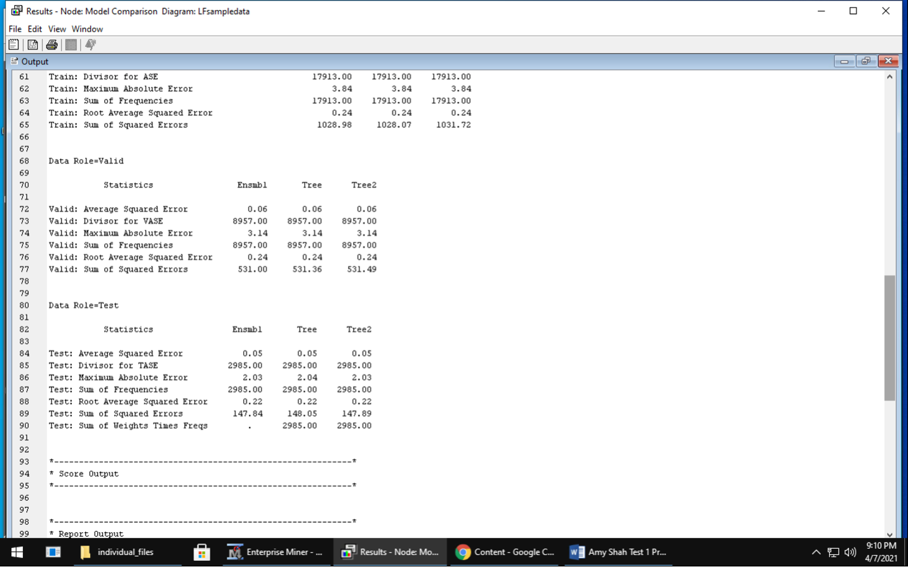

SAS enterprise miner project

In this class assignment project, I manipulated data using SAS enterprise miner.
Using the Loss Frequency dataset shared with you over Blackboard (during class sessions), describe the data and list out all the steps that you will undergo to prepare the data. Once all the data preparation has taken place, list out the other data mining tasks that you will perform. Provide at least two data mining models which are suitably applicable given the nature of the data in the dataset. Present all the steps in the process in a word document and submit it on blackboard. You may take the help of SAS EM, but that is not required, you can simply use older class videos to list out the steps required.
First I obtained the dataset and made it into a SAS library. From there I loaded the dataset and began the data mining process. I used this method: SEMMA (Sample, Explore, Modify, Model, and Assess)
Sample – generate a representative sample of the data
Because data sets may be extremely large, I sampled the data which should be representative of the whole dataset and examined that. I attempted this in enterprise miner but I found that the sample was not truly representative of the whole dataset so I used the whole dataset instead. The SAS data I used was called Lossfrequency (see below diagrams). Exploring and cleaning the data takes the longest time in this process
Explore – visualization and basic description of the data During this stage, I used DMDB node to provide a data summary and Graph explore node to see the data and make some plots seen below. This data had no missing values and did not need extensive cleaning.
Modify – select variables, transform variable representations There was no missing data in this dataset so I did not need to impute any data. Model – use a variety of statistical and machine learning models During this modeling phase, I made 2 decision trees. For the first decision tree, I kept all the default settings for significance level, maximum depth, leaf size and depth adjustment. For the second, decision tree, I changed the maximum depth and leaf size to 4. Afterwards, I used an ensemble method to improve upon the decision trees.
Assess – evaluate the accuracy and usefulness of the models In this assessment, all the models performed roughly equally as evidenced by the ASE and RMSE being the same.
Manipulated data using SAS and SAS enterprise miner.
Manipulated data using SAS and SAS enterprise miner.
Manipulated data using SAS and SAS enterprise miner.
Manipulated data using SAS and SAS enterprise miner.

Manipulated data using SAS and SAS enterprise miner.
Manipulated data using SAS and SAS enterprise miner.
Manipulated data using SAS and SAS enterprise miner.
Manipulated data using SAS and SAS enterprise miner.
Manipulated data using SAS and SAS enterprise miner.
